Пивоваренная компания «Примус» – это пять заводов в Новосибирской области
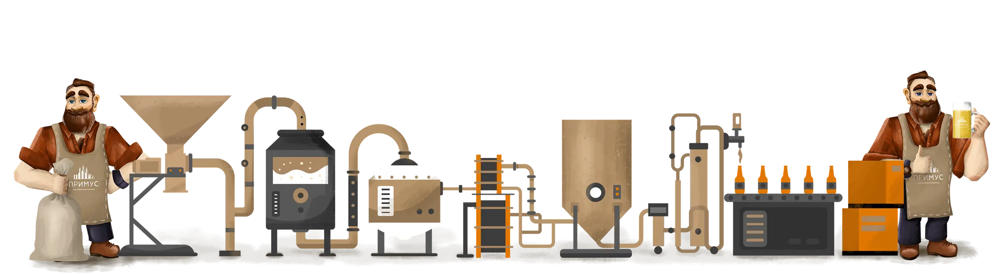

КАК МЫ РАЗВИВАЛИСЬ
Первое предприятие пивоваренной компании «Примус» открылось в Черепаново в 2018 году. С самого начала мы стремились к непрерывному развитию и постоянным улучшениям: в 2022 году завод переехал в новое помещение с большими и более современными мощностями, а магазин при заводе стал более стильным и красивым. Производимое нами пиво настолько понравилось нашим потребителям, что мы стали быстро развиваться, и всего за 4 года открыли ещё 4 завода: в 2019 года — в Купино, в 2020 году — в Ордынке, в 2022 году — в Коченёво, и в 2023 году — в Красном Яре и в Болотном
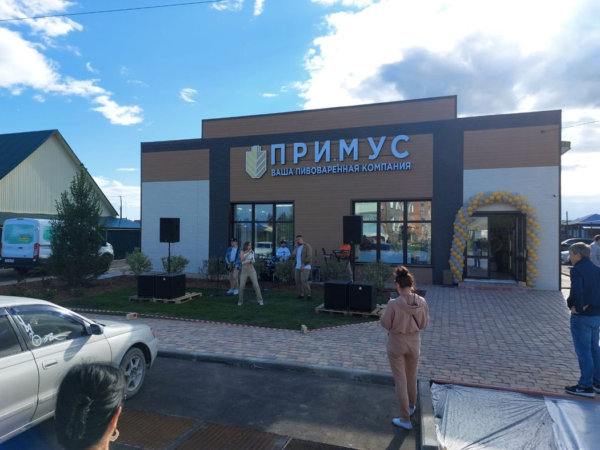
Большинство сортов пива в «Примусе» – нефильтрованные
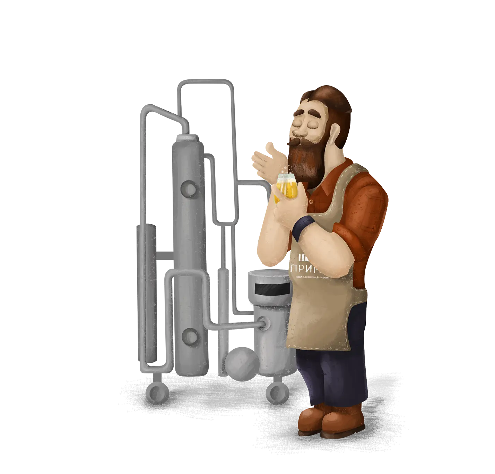
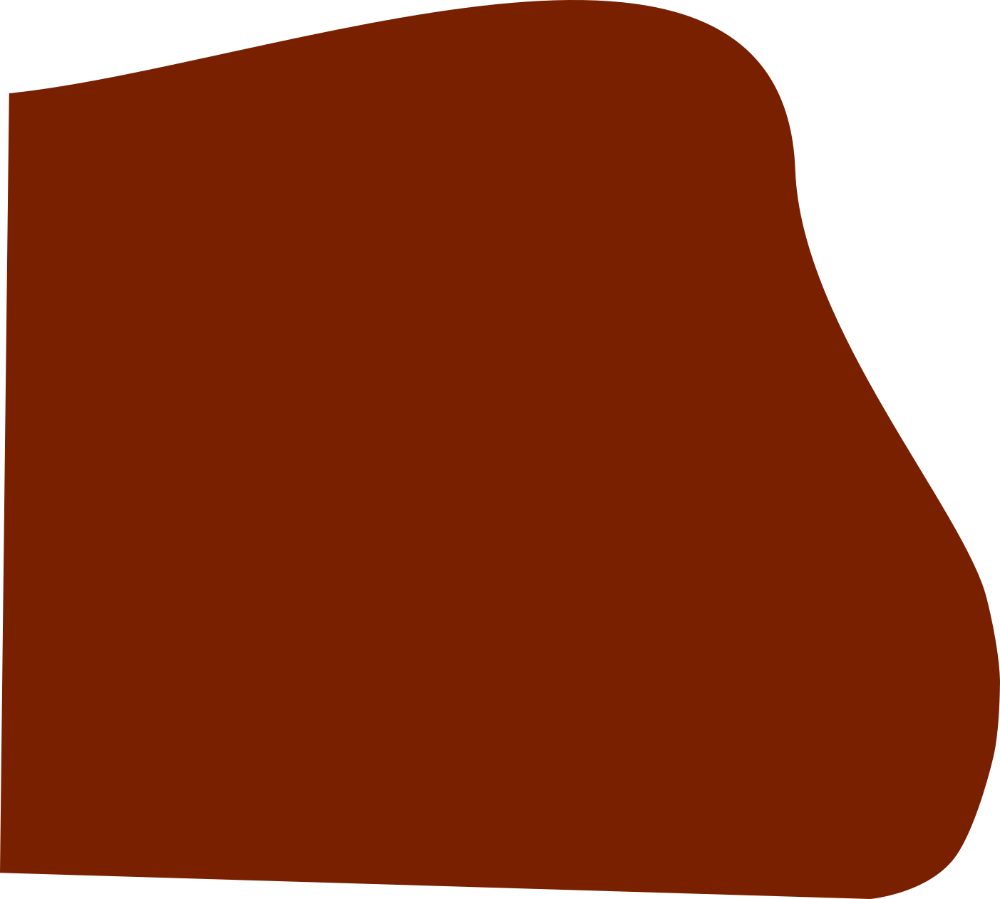
ПЕРВАЯ ФИЛЬТРАЦИЯ
Первые три года наша компания производила исключительно нефильтрованное пиво. Ведь именно оно сохраняет всё полезное, что есть в настоящем пиве, и обладает наиболее полным и богатым вкусом. 30 марта 2021 года на Заводе в Купино мы провели первую фильтрацию нашего пива: были произведены и выведены на рынок сорта «Янтарное» и «Золотой колос». В 2022 году мы приобрели новое оборудование и теперь фильтруем в Купино и в Болотном. И теперь производим фильтрованное пиво на двух наших площадках.

КАК ФИЛЬТРУЕТСЯ ПИВО
Для того чтобы стать прозрачным и блестящим, наше пиво, сваренное по традиционной технологии, проходит через специальную фильтрационную установку. В ней находятся специальные фильтрационные свечи — вертикальные трубы с большим количеством микроскопических отверстий. На эти свечи намывается кизельгур* разных фракций (мелкая фракция, средняя и крупная) и пиво под давлением проходит через них. Таким образом, все дрожжи и белок остаются на слое кизельгура, а внутрь свечи (трубы) поступает чистое фильтрованное пиво.
Кизельгур* — это пористое полезное ископаемое, которое образуется из панцирей разных ракообразных, и является самым лучшим сорбентом для пива.
Мы хотим, чтобы как можно больше потребителей выбирало наше пиво, поэтому постоянно обновляем линейку продукции.
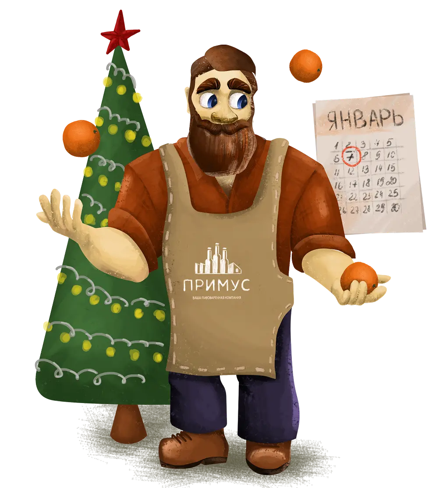

НОВЫЕ СОРТА И СЕЗОННОЕ ПИВО
В первом квартале 2022 года компания «Примус» обновила линейку сортов пива, вы можете приобрести их в наших фирменных магазинах. Нам очень хотело порадовать своих потребителей чем-то новым и нестандартным. В результате творческих поисков наши пивовары разработали и сварили пиво «Имперское» — сорт с добавлением риса, «Хмельное» — сорт с технологией холодного охмеления, «Пенное» — сорт с добавлением ячменя. Чуть позже появилось «Бархатное» — сорт тёмного пива с карамельными нотами во вкусе и аромате.
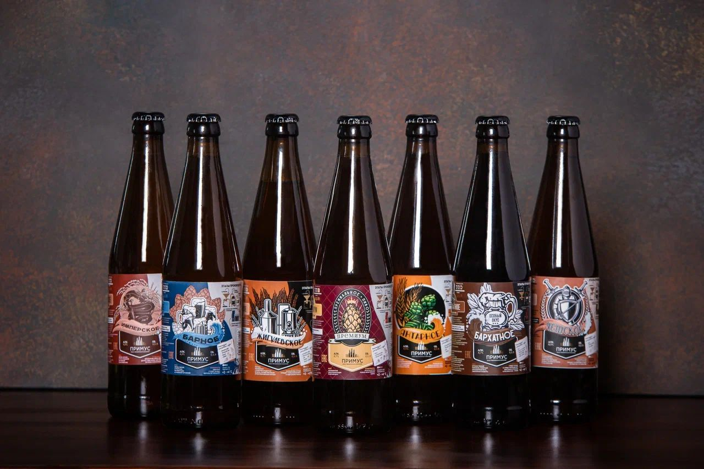
За много лет работы у нас сложились собственные традиции: к любимым праздникам наши пивовары варят сезонные сорта: «Рождественское» и «Мартовское» — тёмные и полутёмные сорта. Не так давно на самом молодом филиале компании в Красном Яре, мы сварили новый сорт пива из редкого премиального сырья, оно так и называется — «Премиум».
Наших взрослых потребителей мы радуем вкусным пивом, а ребятишек – лимонадами на натуральном сиропе!
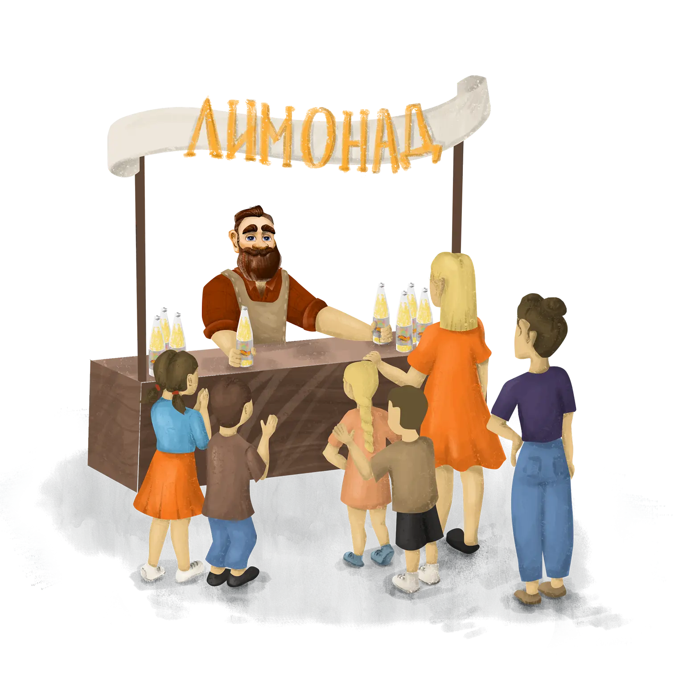

ЗАПУСК ПЕРВОГО ЛИМОНАДА
Мы очень гордимся своей безалкогольной продукцией — лимонады со вкусом из детства мы выпускаем с 2023 года на заводе в Коченёво. Сироп делаем сами — он натуральный, без консервантов и примесей. В декабре 2023 года мы выпустили два новых сорта — «Грушевый» и «Тархун». Приятно получать позитивную обратную связь от потребителей — наши сладкие напитки обожают не только дети, но и взрослые.

5-й завод компании в Болотном с самым большим парком ЦКТ и экспериментальными варками
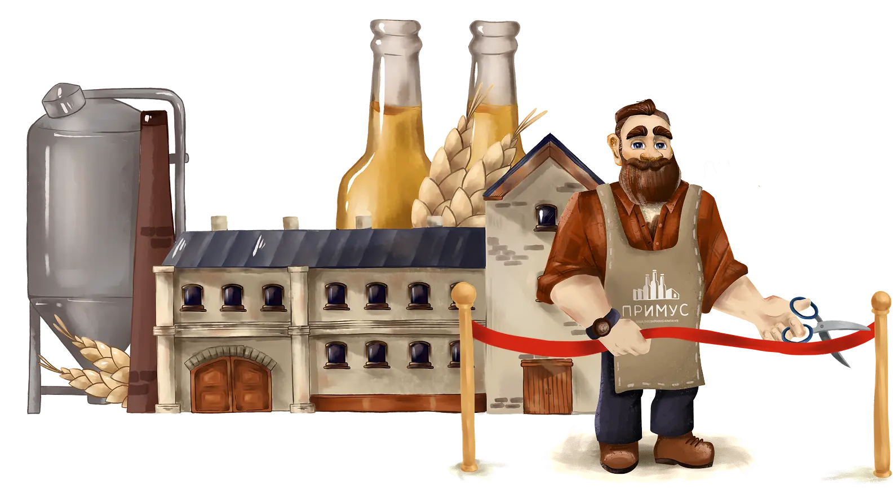
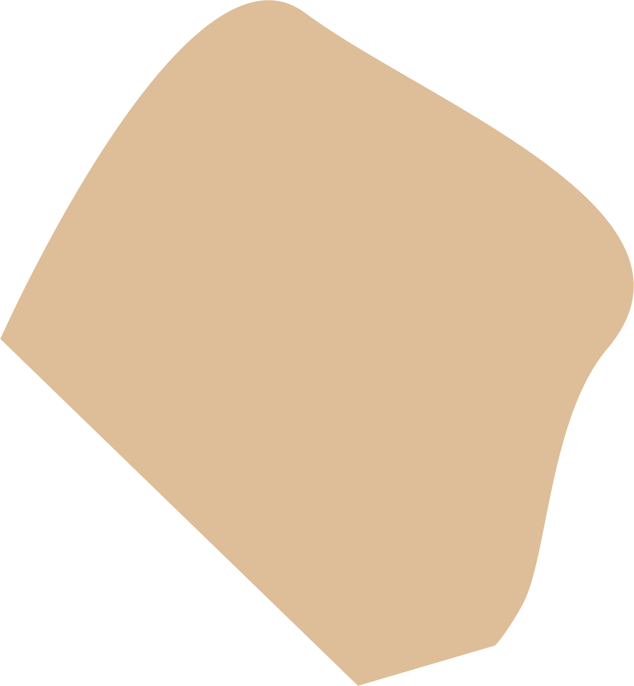
5 завод компании в Болотном
В 2024 году мы открыли наш пятый завод в Болотном, который стал уникальным по нескольким причинам.
Это первый завод без собственной розничной торговли, специализирующийся на опте. Все остальные заводы имеют при себе розничный магазин.

Наш завод в Болотное выделяется среди других также благодаря крупнейшему парку ЦКТ — здесь установлено 30 резервуаров по 2 тонны каждый! Это позволяет нам проводить экспериментальные варки и отрабатывать новые рецепты. Мы активно работаем над созданием безалкогольной продукции, включая лимонады и квас. А сейчас на заводе идут пробные варки сидра, и именно здесь варится наша крафтовая линейка пива.
Одним из ключевых факторов успешных экспериментов является отличное качество местной воды. Именно она придает нашей продукции уникальный вкус и характер.
Здание, в котором теперь кипит жизнь нашего производства, когда-то было хлебозаводом, который радовал жителей района свежим хлебом и аппетитными булочками. Местные до сих пор с теплотой вспоминают те времена и продукцию, выходившую из этих стен.
С этого завода мы поставляем продукцию в Томск, Северск, Юргу, Мошковский район, Кемерово и Новокузнецк. А для Новосибирска готовим специальные сорта и в ближайшем будущем — крафтовое пиво.
Благодаря местоположению, парку оборудования и профессиональной команде мы создаем для вас лучшее!
Для производства напитков мы используем только натуральные ингредиенты
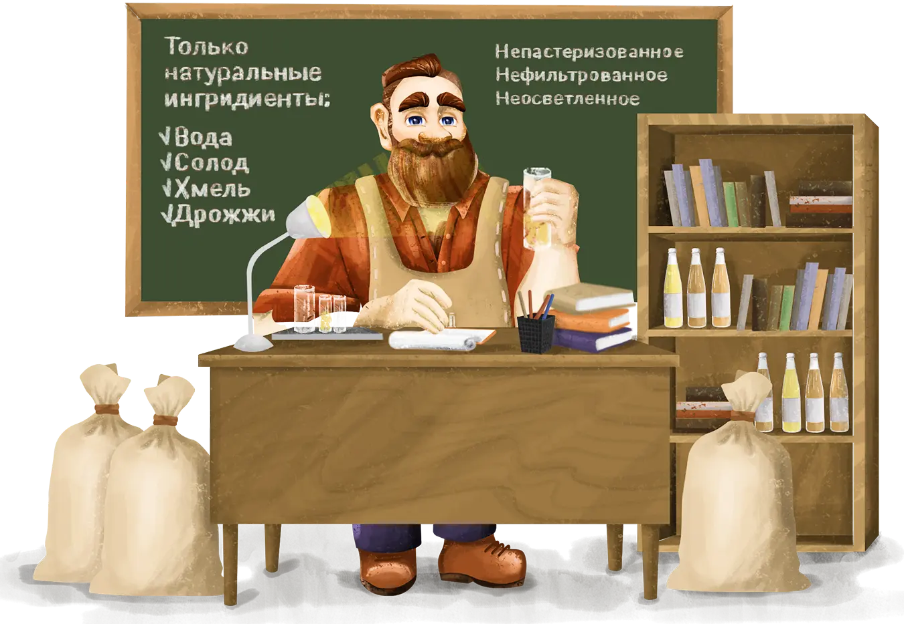
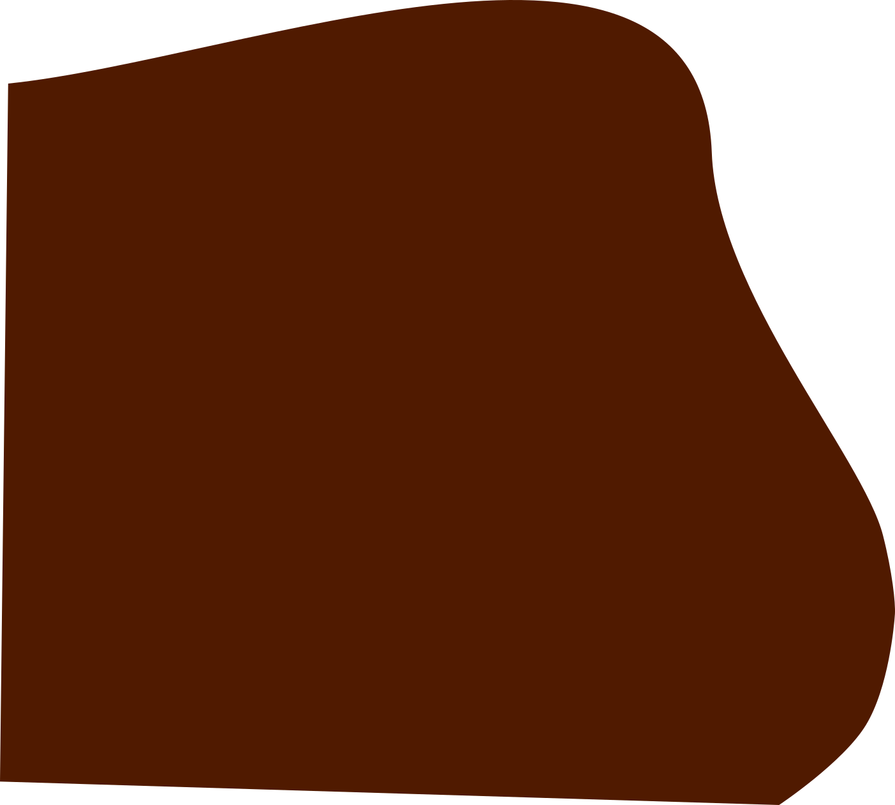
Мы варим пиво всего из 5 ингредиентов:
- Вода
- Солод
- Хмель
- Дрожжи
- Любовь и забота пивовара
Большинство сортов нашего пива:
НЕПАСТЕРИЗОВАННЫЕ — ни на одном заводе пастеризацию мы не применяем. Пастеризация — это кратковременное нагревание пива для уничтожения дрожжей и микроорганизмов, вследствие чего пиво перестаёт быть «живым» и теряет свои вкусовые свойства.
НЕФИЛЬТРОВАННЫЕ — на всех наших заводах мы выпускаем нефильтрованное пиво. Именно поэтому в нашем пиве допускается мутность и небольшой осадок, так как в нефильтрованном пиве могут и должны оставаться дрожжи. Фильтрованное пиво производится только на заводах «Примус» в городе Купино и Болотное.
НЕОСВЕТЛЕННЫЕ — ни на одном заводе мы не производим принудительного осветления. Наша продукция осветляется только естественным путём, за счёт долгой выдержки.
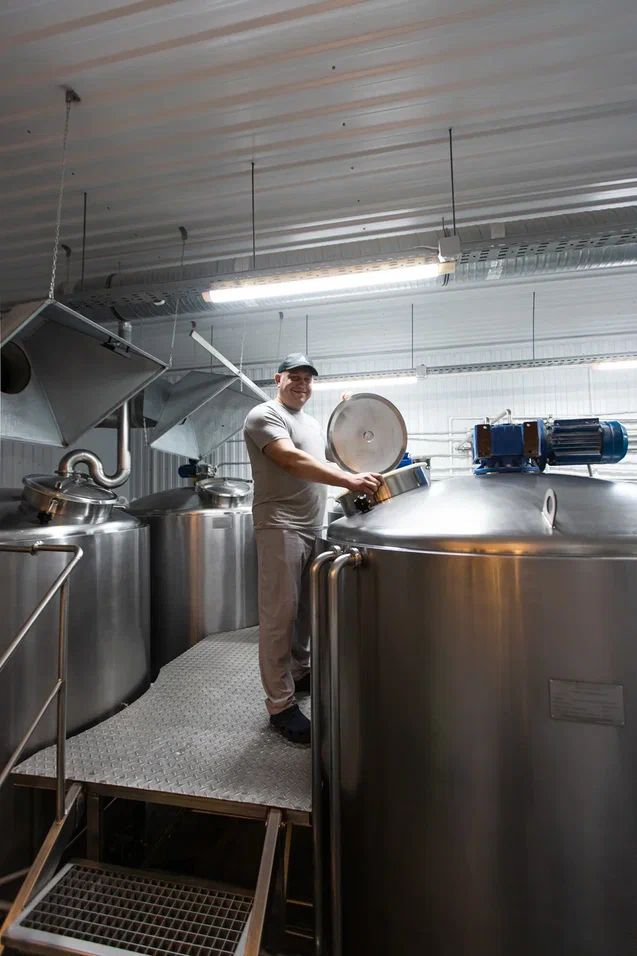
От Сибири до Москвы: Награды торговой марки «Примус» за качество и вкус
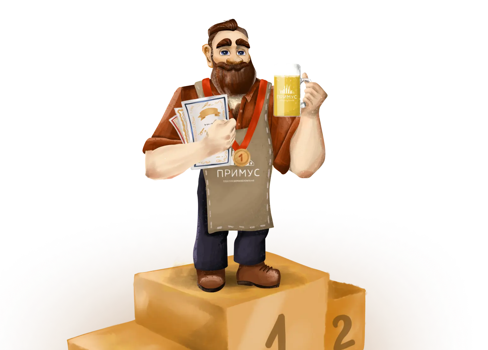

НАШИ НАГРАДЫ
С 2023 года продукция торговой марки «Примус» завоевывает сердца и вкусовые рецепторы потребителей, занимая призовые места на самых престижных выставках и международных конкурсах.
Всё началось в 2023 году, когда мы впервые вышли на сцену Продовольственной недели в Сибири. Этот момент стал для нас не просто дебютом, а настоящим триумфом! Наши три сорта пива — «Жигулевское», «Народное» и «Премиум» — были удостоены малых серебряных медалей. Это было подтверждением того, что наш труд и старания не прошли даром. Мы чувствовали, что на правильном пути!

В 2024 году мы сделали ещё один шаг вперёд. На международном конкурсе «Лучший продукт года — 2024», проходившем в рамках Международной выставки «ПРОДЭКСПО — 2024» в Москве, «Жигулевское» и «Премиум» завоевали золотые медали за свой вкус и качество. Это был настоящий праздник для всей команды! Мы понимали, что наше пиво не только радует клиентов, но и получает признание на самом высоком уровне. Этот успех вдохновил нас продолжать работать с ещё большей страстью и преданностью.
А в 2025 году мы вновь порадовали наших поклонников! На дегустационном конкурсе в рамках Международного форума пива в Сочи мы привезли домой золотую и серебряные медали. Это было не просто соревнование — это была возможность продемонстрировать, как много значит для нас каждое варение, каждый ингредиент и каждая рецептура.
Каждая награда — это не просто медаль на стене. Это символ нашего стремления к совершенству, нашей любви к делу и уважения к каждому клиенту. Мы уверены, что впереди нас ждут новые горизонты, новые достижения и, конечно же, новые победы. С каждым новым глотком пива от «Примус» вы становитесь частью нашей истории — истории о страсти, качестве и настоящем мастерстве. Спасибо, что идете с нами по этому удивительному пути!
Все пять заводов компании «Примус» находятся в Новосибирской области. Мы сами их строили и запускали, поэтому каждый из них — любимое детище.
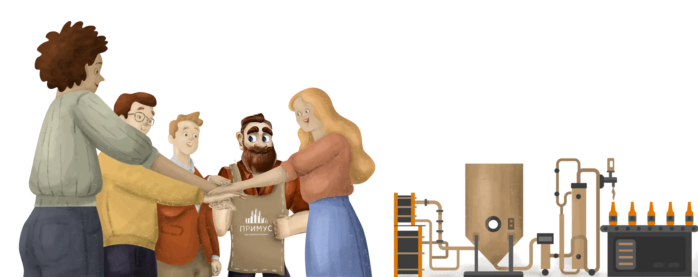

КОМАНДА «ПРИМУСА» — МЫ ЛЮБИМ СВОЮ РАБОТУ
Команды наших предприятий — это уникальные люди, опытные мастера своего дела, объединённые общей целью и любовью к пивоварению. Мы тщательно отбираем сырьё для нашего пива, используем современное оборудование, соблюдаем необходимые стандарты и строго следим за правильностью всех технологических процессов: всё это помогает нам достичь высокого качества производимой продукции. Ведь главная цель нашей дружной команды — варить вкусное и качественное пиво, чтобы наши любимые потребители с лёгкостью останавливали свой выбор именно на нашей продукции!
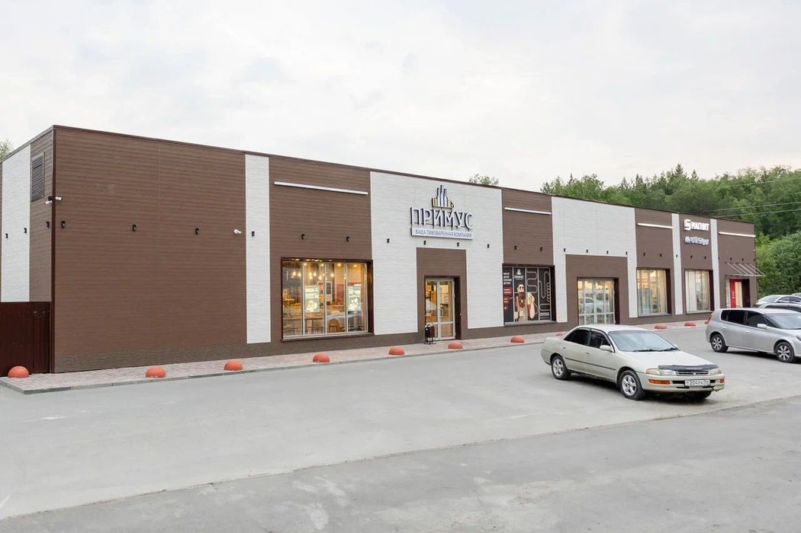
с компанией
«Пиво да Пиво»
Теперь продукцию торговой марки «Примус» можно приобрести в сети магазинов «Пиво да Пиво»
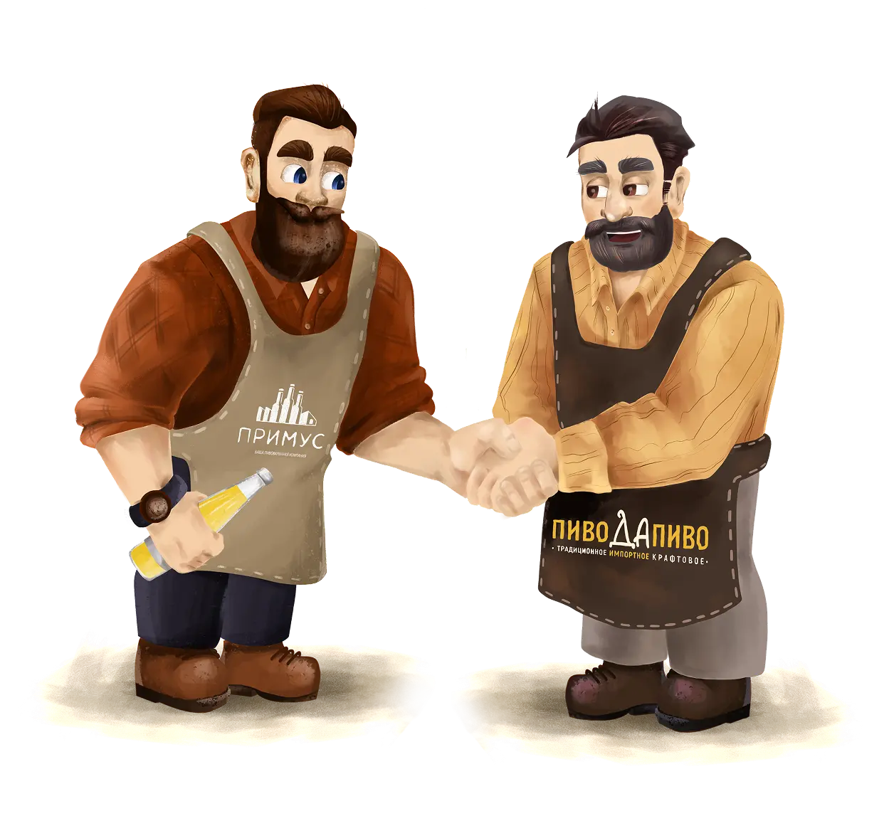

Объединение с компанией «Пиво да Пиво»
Теперь продукцию торговой марки «Примус» можно приобрести в сети магазинов «Пиво да Пиво»
Дата объединения: 01.03.2025
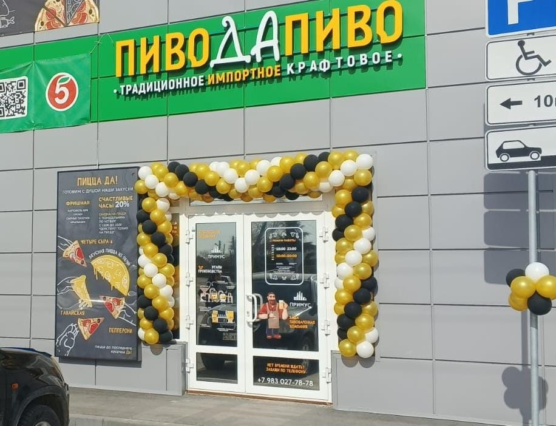
В современном мире рынок стремительно меняется, и для успешной работы заводу сегодня недостаточно лишь отличного качества продукции. Необходима надежная розничная сеть, которая поможет повысить узнаваемость и реализовать продукцию. В начале 2025 года мы сделали важный шаг к этой цели — объединились с сетью розничных магазинов «Пиво да Пиво».
Теперь всю продукцию нашей торговой марки: пиво, квас, лимонады — можно приобрести в 24-х магазинах, расположенных по всему городу.
Это объединение стало результатом совместных усилий профессионалов из двух ключевых сфер — производственной и розничной. Наша главная задача — создать мощную компанию, способную гарантировать высокое качество на всех этапах: от производства до конечного потребителя.
Для нашего завода это слияние открывает новые горизонты. Мы сможем значительно повысить узнаваемость нашего бренда в городе, осуществлять контроль качества продукции и получать ценную обратную связь от клиентов через собственную сеть. Благодаря этому объединению и растущему интересу к нашей продукции мы активно работаем над созданием новой крафтовой линейки пива. Именно в местах продаж наши клиенты и ценители делятся своими предпочтениями и ожиданиями, что позволяет нам лучше понимать их потребности.
Теперь в сети магазинов «Пиво да Пиво» Вы можете найти продукцию торговой марки «Примус» как в фасовке, так и в розливе. Мы гордимся тем, что наш завод поставляет в эту сеть самое свежее пиво, которое только можно предложить.
Мы уверены, что этот шаг сделает нас еще лучше и поможет создавать пиво, которое Вы действительно хотите!